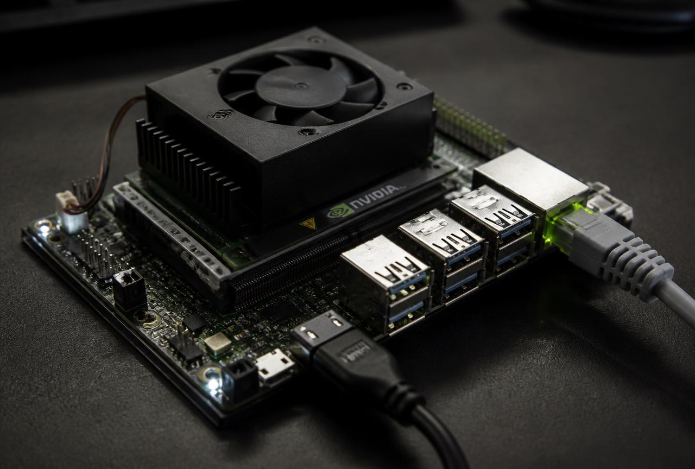

Reach your Jetson from anywhere. Terminal + full desktop.
A permanently-installed NVIDIA Jetson Xavier NX 8GB sitting on college Ethernet,
reachable from a hostel room with nothing but a phone hotspot — using only free, open-source pieces:
OpenSSH for the shell, x11vnc for the existing GNOME/X11 desktop and
Tailscale as the private encrypted road between them. Every command below is copy-paste ready.
No NoMachine. No paid licence. No public port forwarding.
Free & open sourceUbuntu 20.04.6 · aarch64JetPack / CUDA / ROS 2 untouchedTailscale-only exposureWindows · macOS · Ubuntu clientsSurvives reboot

The permanent node — Jetson Xavier NX, powered 24/7, wired to college Ethernet.
00 — Mental model
Three layers. Never mix them up.
Most remote-access confusion comes from blending networking with display. Keep these separate and every error message below becomes obvious.
Layer 1
Physical network
Jetson: college Ethernet (private LAN IP such as 192.0.2.10, which may change).
Laptop: phone 4G/5G hotspot. Two totally different networks — neither can see the other directly.
Layer 2
Tailscale — the private road
A WireGuard mesh gives each device a stable 100.x.y.z address. Jetson 100.64.0.10,
Mac 100.64.0.20. These never change when the LAN IP changes. Tailscale does not draw a desktop.
Layer 3
Applications — the doors
SSH = terminal door (port 22). x11vnc = graphical door (port 5900), attaching to the
already running Xorg + GNOME session. SSH cannot show a desktop; x11vnc cannot create Internet.
Final architecture
INTERNET
/ \
/ \
Laptop (hostel) College Ethernet
Phone 4G/5G hotspot |
| |
v v
Laptop Jetson Xavier NX
| |
+---- Tailscale -----+
(encrypted mesh)
|
+---------------+---------------+
| |
SSH :22 x11vnc :5900
| |
v v
Terminal shell Existing Xorg display
|
GNOME Shell
|
Ubuntu desktop
Layer 1 — the college uplink. Private IP, no inbound ports, no router access needed.
JetPack, CUDA, cuDNN, Docker, ROS 2 Humble and the desktop stack all stay exactly as they are. Remote access is an added layer, not a rebuild.
Rule 02
Disk is tight — install narrow
The eMMC root has roughly 2 GB free. Install x11vnc only, with --no-install-recommends. Never run a blind full-upgrade.
Rule 03
Discover, never guess
DISPLAY=:0 is an assumption. The real display and XAUTHORITY are read out of the live session in Step 04.
Rule 04
Tailscale only
VNC binds to the Tailscale interface. Port 5900 is never forwarded to the public Internet and never opened on the college LAN.
Rule 05
Broken cuDNN apt repo is expected
The stale file:/var/cudnn-local-tegra-repo-* entry throws an error on every apt update. Step 05 works around it without touching NVIDIA repos.
Rule 06
SSH first, GUI second
Code, Docker, ROS and monitoring over SSH. Reserve VNC for genuine graphical work like RViz2 or a file manager.
Step by step
Eleven steps. Copy, paste, verify.
Each card tells you where to run the command, what to paste, and exactly what a healthy output looks like. Do not skip the verify blocks — they are how you avoid debugging blind later.
Legend XAVIER = on the Jetson CLIENT = on your laptop
01
00 — 1 Step
Confirm what is already running
Log in on the Jetson (physically, or over SSH on the LAN) and take an honest inventory before changing anything. Run these one at a time.
1e · The graphical session exists and is X11 (not Wayland)
Xavier · terminal
systemctl is-active gdm3; loginctl list-sessions
Write down the numeric session id whose USER is jetson-user and whose SEAT is seat0 (in the reference setup it was 2). You need it in Step 04.
02
00 — 2 Step
Install the Tailscale client on your laptop
The Jetson is already on the tailnet. Your laptop must join the same tailnet with the same login. Pick your operating system — the choice is remembered across the whole page.
Install via Homebrew (or the Mac App Store build, either is fine).
Client · macOS Terminal
brew install --cask tailscale
Launch Tailscale from Applications, sign in with the same account, then verify:
Client · macOS Terminal
/Applications/Tailscale.app/Contents/MacOS/Tailscale status
Install with winget in an ordinary PowerShell window, then sign in from the tray icon.
Client · Windows PowerShell
winget install --id tailscale.tailscale -e
Client · Windows PowerShell
tailscale status
If tailscale is not recognised, close and reopen PowerShell, or call it directly:
& "C:\Program Files\Tailscale\tailscale.exe" status
Client · Ubuntu terminal
curl -fsSL https://tailscale.com/install.sh | sh
sudo tailscale up
tailscale status
ExpectedBoth devices listed in tailscale status, the Jetson as 100.64.0.10.
03
00 — 3 Step
Prove SSH works over Tailscale — twice
Do this before touching x11vnc. If the terminal door does not open, the graphical door never will.
3a · Reachability
Client · any OS
tailscale ping 100.64.0.10
Expectedpong from ubuntu ... via DERP or via 172.16.x.x:41641 (direct is faster, DERP still works).
3b · The actual login
Client · any OS
ssh jetson-user@100.64.0.10
ExpectedWelcome to Ubuntu 20.04.6 LTS then a prompt like jetson-user@jetson-node:~$.
A harmless /opt/ros/foxy/setup.bash: No such file or directory line may also appear — ignore it for now, Step 11 cleans it.
3c · A permanent shortcut, so you type one word forever
Disconnect the laptop from college Wi-Fi entirely.
Turn on the phone hotspot and join it.
Leave the Jetson exactly where it is, on college Ethernet.
Run ssh xavier again.
If this fails, stop here and fix networking first — see Troubleshooting T1–T4. Do not proceed to x11vnc.
04
00 — 4 Step
Discover the real DISPLAY and XAUTHORITY
This is the step everyone gets wrong. DISPLAY=:0 is a guess; on a GDM3 Jetson the user session frequently lives on a different display with a Xauthority file under /run/user/1000/gdm/. Read the truth out of the running system.
4a · Which session is the real desktop?
Xavier · over SSH
loginctl list-sessions
loginctl show-session 2 -p Id -p Name -p Type -p Display -p Seat -p State -p Active
Replace 2 with your session id from Step 1e. You want Type=x11, State=active, Name=jetson-user.
4b · Ask Xorg itself which display and auth file it uses
The line whose auth path contains /run/user/1000/ is your session (uid 1000 = jetson-user). The other one, under /run/user/124/, is the GDM login screen — connecting to that only ever shows a greeter.
4c · Print the exact values, machine-readable
Xavier · over SSH
sudo ls -la /run/user/1000/ | grep -Ei 'gdm|X11|xauth'
sudo ls -la /run/user/1000/gdm/
ls /tmp/.X11-unix/
Expected/run/user/1000/gdm/Xauthority exists, and /tmp/.X11-unix/ lists sockets such as X0 and/or X1. A socket named X1 means display :1 exists.
4d · Read DISPLAY straight from the live GNOME process (authoritative)
gnome-shell pid = 2456
DISPLAY=:1
XAUTHORITY=/run/user/1000/.mutter-Xwaylandauth.XXXXXX # or /run/user/1000/gdm/Xauthority
XDG_SESSION_TYPE=x11
Copy those two exact strings somewhere. Everywhere below that says :1 or /run/user/1000/gdm/Xauthority, substitute your values. Nothing else in this guide requires guessing.
4e · Prove the pair actually works before installing anything
Xavier · over SSH
sudo DISPLAY=:1 XAUTHORITY=/run/user/1000/gdm/Xauthority xdpyinfo | head -n 12
ExpectedA block starting with name of display: :1 and a dimensions: line such as 1920x1080 pixels. If instead you see unable to open display, your display or auth path is wrong — go back to 4b/4d. Missing xdpyinfo? Install it with sudo apt install -y --no-install-recommends x11-utils.
05
00 — 5 Step
Install x11vnc without disturbing the Jetson stack
x11vnc is a small package (a few hundred KB plus a couple of libraries). Install it narrowly, and work around the stale cuDNN repository instead of "fixing" NVIDIA sources.
5a · Maybe it is already there
Xavier · over SSH
which x11vnc && x11vnc -version
If it prints a path and a version like x11vnc: 0.9.16, skip to Step 06.
5b · Refresh package lists, tolerating the broken local cuDNN repo
This refreshes only the main Ubuntu list and ignores /etc/apt/sources.list.d/, so the missing file:/var/cudnn-local-tegra-repo-ubuntu2004-8.6.0.166 Release cannot abort the run. Nothing NVIDIA-related is modified or removed.
ExpectedA version string, and free space on / unchanged or better than before.
06
00 — 6 Step
Create the VNC password file
Tailscale already authenticates the device. The VNC password is the second lock — it stops anything else on the tailnet, or a stray process on the Jetson, from grabbing your desktop.
It prompts twice for a password, then asks Write password to /etc/x11vnc/vncpasswd? — answer y. VNC passwords are truncated to 8 characters, so use 8 strong characters and treat the tailnet as the real perimeter.
Manual first, service later. This proves the display, the auth file, the password and the network path all agree — while you can still read the log live.
7a · Confirm the Tailscale interface address to bind to
Xavier · over SSH
ip -4 addr show tailscale0 | grep inet
tailscale ip -4
ExpectedThe log ends with lines similar to
The VNC desktop is: 100.64.0.10:0 and
PORT=5900, then sits there waiting. Leave this terminal open.
Flag reasons: -shared lets more than one viewer attach · -forever keeps serving after a viewer disconnects · -repeat makes held keys repeat normally · -noxdamage avoids a common Jetson/compositor artefact class · -xkb fixes modifier keys for non-US layouts · -listen is the security-critical one: the socket only exists on the Tailscale address, never on college Ethernet.
7c · From a second SSH window, confirm the bind is Tailscale-only
Xavier · second SSH window
sudo ss -tlnp | grep 5900
ExpectedLISTEN 0 32 100.64.0.10:5900 — and crucially not0.0.0.0:5900 and not 192.0.2.10:5900.
08
00 — 8 Step
Connect a VNC viewer from your laptop
Address in every case: 100.64.0.10:5900 (some clients want 100.64.0.10::5900, some just want the bare IP because 5900 is display :0). Choose your OS.
Option A — built-in Screen Sharing (nothing to install)
Client · macOS Terminal
open vnc://100.64.0.10:5900
Enter the 8-character VNC password when asked. The Apple client is convenient but limited on encodings.
Option B — RealVNC Viewer (better compression, recommended)
Client · macOS Terminal
brew install --cask vnc-viewer
Open VNC Viewer → new connection → 100.64.0.10:5900 → set Picture quality: Medium.
ExpectedThe exact same GNOME desktop that a monitor plugged into the Jetson would show — same open windows, same wallpaper. Move the mouse, type in a terminal, open Files. Input is injected straight into the live session.
Extra-paranoid alternative — SSH tunnel instead of a VNC listener
If you prefer x11vnc to listen only on localhost and never on any network interface, run it with -localhost and forward the port over SSH:
Then point the viewer at localhost:5901. Two encrypted layers, zero listening sockets on the tailnet.
09
00 — 9 Step
Lock the door: firewall + Tailscale-only access
The -listen flag already keeps 5900 off the college LAN. A firewall makes that guarantee independent of a typo in a service file later.
9a · Enable ufw with a Tailscale-friendly policy
Xavier · over SSH
sudo apt-get install -y --no-install-recommends ufw
sudo ufw default deny incoming
sudo ufw default allow outgoing
sudo ufw allow in on tailscale0
sudo ufw allow 41641/udp comment 'tailscale direct'
sudo ufw allow from 172.16.0.0/12 to any port 22 proto tcp comment 'campus LAN ssh rescue'
Keep that last rule (or add your own LAN range) before enabling ufw, otherwise a Tailscale outage plus a closed LAN port 22 means a keyboard-and-monitor trip to the Jetson.
Xavier · over SSH
sudo ufw --force enable
sudo ufw status verbose
9b · Explicitly deny VNC from anywhere except the tailnet
Xavier · over SSH
sudo ufw deny in on eth0 to any port 5900 proto tcp
sudo ufw status numbered
Check your wired interface name first with ip -br link — on Jetson it is often eth0, but enP... names also occur. Docker rules are untouched: ufw does not manage the DOCKER iptables chains, so containers and ROS 2 DDS traffic on docker0 keep working.
9c · Confirm nothing broke
Xavier · over SSH
tailscale status | head -n 3
sudo docker ps
ping -c 2 google.com
10
00 — 10 Step
Make it survive reboots with systemd
Only now, with the manual run confirmed, write the unit. It waits for the graphical target and Tailscale, restarts forever, and uses the discovered display and auth path — no guesses.
10a · Write the unit file
Xavier · over SSH
sudo tee /etc/systemd/system/x11vnc.service > /dev/null <<'EOF'
[Unit]
Description=x11vnc sharing the existing X11 desktop (Tailscale only)
After=graphical.target tailscaled.service network-online.target
Wants=graphical.target tailscaled.service
[Service]
Type=simple
# Wait until the X display, its auth file and the Tailscale address all exist.
ExecStartPre=/bin/bash -c 'for i in $(seq 1 60); do [ -e /tmp/.X11-unix/X1 ] && [ -e /run/user/1000/gdm/Xauthority ] && /usr/bin/tailscale ip -4 >/dev/null 2>&1 && exit 0; sleep 2; done; exit 1'
ExecStart=/bin/bash -c '/usr/bin/x11vnc -display :1 -auth /run/user/1000/gdm/Xauthority -rfbauth /etc/x11vnc/vncpasswd -listen $(/usr/bin/tailscale ip -4) -rfbport 5900 -shared -forever -repeat -noxdamage -xkb -o /var/log/x11vnc.log'
Restart=always
RestartSec=5
User=root
[Install]
WantedBy=multi-user.target
EOF
Edit :1, /tmp/.X11-unix/X1 and the Xauthority path to match your Step 04 findings before enabling. X1 pairs with display :1; display :0 pairs with X0.
11d · Move the Jetson to its permanent Ethernet port
Xavier · after the move
hostname -I
tailscale status
The LAN IP will likely change. The 100.64.0.10 address does not, so ssh xavier and the VNC bookmark keep working with zero edits. If the service was started before Tailscale finished coming up, sudo systemctl restart x11vnc re-binds it.
Seeing via DERP(...) is fine. Blocked entirely? Toggle airplane mode, disable any VPN or private-relay feature on the phone, and confirm UDP 41641 is not being filtered.
T3The Jetson's college LAN IP changed and I panickedIt does not matter. That is the whole point.
Never store the 172.16.x.x address anywhere. Confirm the Tailscale identity instead:
Xavier
hostname -I
tailscale ip -4
sudo systemctl restart x11vnc
The restart re-runs the -listen $(tailscale ip -4) substitution against the current interface state.
Then re-test with xdpyinfo before starting x11vnc again. Also make sure you are running x11vnc with sudo — the auth file under /run/user/1000/gdm/ is not world-readable.
T6I connected but I only see the GDM login screen, not my desktopYou attached to the greeter's X server.
The greeter runs as uid 124 with /run/user/124/gdm/Xauthority. You want the uid 1000 session. Either log in once on the physical monitor so the user session exists, or enable auto-login so the desktop is present after every unattended reboot:
Also check that gnome-shell is still alive: pgrep -a gnome-shell. If it died, sudo systemctl restart gdm3 (this closes GUI apps but never touches Docker or ROS).
T8Viewer says "connection refused" but SSH works fineNothing is listening, or it listens on the wrong address.
Xavier
systemctl is-active x11vnc
sudo ss -tlnp | grep 5900
sudo tail -n 30 /var/log/x11vnc.log
sudo ufw status verbose
Bound to 127.0.0.1 only? You used -localhost — either drop it or use the SSH tunnel from Step 08. No socket at all? The service died; read journalctl -u x11vnc -n 50 --no-pager.
T9Authentication failed in the VNC viewerPassword file path, ownership, or the 8-character truncation.
Remember VNC keeps only the first 8 characters — a longer passphrase silently becomes its prefix, which is a classic "it worked yesterday" trap when you type it in full somewhere else.
T10apt update fails: cudnn-local-tegra-repo ... no longer has a Release fileStale local repo. Work around it; do not reinstall CUDA.
Safest — restrict the update to the main list (used in Step 05):
Reclaim from Docker deliberately, never with a blind prune: sudo docker image ls, remove only images you can rebuild, and keep large datasets on /mnt/ssd.
T12Keyboard types wrong characters, or modifier keys stickXKB mapping mismatch between viewer and server.
Ensure x11vnc runs with -xkb -repeat (both are in the Step 07 command). Then align layouts:
Xavier
export DISPLAY=:1 XAUTHORITY=/run/user/1000/gdm/Xauthority
setxkbmap -query
setxkbmap us
On macOS viewers, disable any "send Option as Alt" remapping if Alt-based shortcuts misfire.
T13Everything is extremely laggy over 4GBandwidth and latency, not a broken setup.
Apply the Performance section, then restart x11vnc with slow-link flags:
Also confirm the path is direct rather than relayed: tailscale ping --verbose 100.64.0.10.
T14The x11vnc service restart-loops after rebootIt started before the X session existed.
Xavier
journalctl -u x11vnc -b --no-pager | tail -n 40
ls -la /tmp/.X11-unix/
sudo ls -la /run/user/1000/gdm/
Confirm the socket name in ExecStartPre matches your display (X0 ↔ :0, X1 ↔ :1). If the desktop only appears after a manual login, enable auto-login (T6). Raise the wait loop from 60 to 120 iterations on slow boots, then sudo systemctl daemon-reload && sudo systemctl restart x11vnc.
T15Did I break ROS 2, Docker, CUDA or the cameras?Verify instead of worrying.
Xavier
sudo docker ps -a | head
sudo docker run --rm -it --network host -e ROS_DOMAIN_ID=42 rover-ros2:humble bash -lc 'ros2 doctor --report | head -n 20'
ls /dev/video* ; lsusb | grep -i intel
tegrastats --interval 1000 | head -n 3
This guide installed only x11vnc (plus optionally ufw and x11-utils) and added one systemd unit. Nothing in the JetPack, CUDA, cuDNN or ROS chain is modified.
T16Should I just use NoMachine instead?No — and the ARM download 404 was not your mistake.
The old https://www.nomachine.com/free/arm/64/deb path returns 404 and leaves a zero-byte file, which is why dpkg -i reported "not a Debian format archive". Clean it up and move on:
Xavier
rm -f ~/Downloads/nomachine_arm64.deb
ls -la ~/Downloads/ | head
x11vnc + Tailscale is free, open source, shares the existing session rather than a second virtual one, and adds no proprietary daemon to a robotics machine.
Acceptance
Tick these and you are done.
Progress is saved in your browser, so you can close the tab mid-setup.